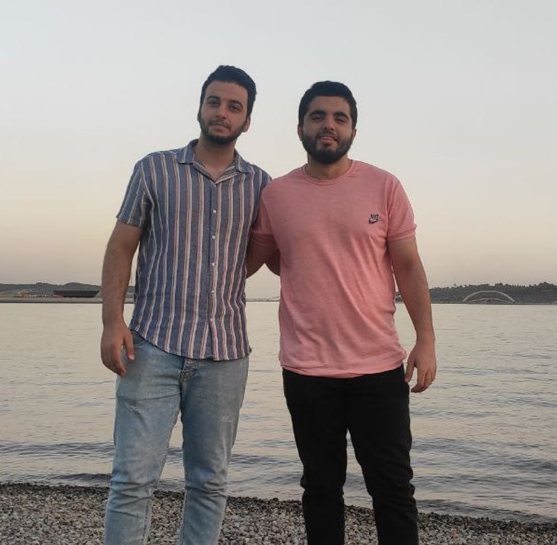

The Persian audio source separation project aims to separate two or more audio files from one audio containing two or more audio sources. Consider a audio file of a meeting in which four people are talking at the same time, and background music is playing; the final product of this project should be able to output five separate audio files, each containing one sound from one of them. Among these audio sources (4 people and a music source). The library in the references section is an open-source project ready for this work. This project may be enough for us (it may not depend on the language). Necessary measures should be taken to personalize it for the Persian language. After preliminary research and making a demo in the Persian language, it is time to test the product. It is placed as a research product in the field of sound processing. It is expected that an initial report will be posted on the company's blog after the research, and the community of this report and weekly reports will also make the project's final report.
Mentor: Dr. Soroush Gooran
Masoumeh siar
Classification vs. Regression in Supervised Learning for Single Channel Speaker Count Estimation
In2018 IEEE International Conference on Acoustics, Speech and Signal Processing (ICASSP) 2018 Apr 15 (pp. 436-440). IEEE.
Abstract: The task of estimating the maximum number of concurrent speakers from single channel mixtures is important for various audio-based applications, such as blind source separation, speaker diarisation, audio surveillance or auditory scene classification. Building upon powerful machine learning methodology, we develop a Deep Neural Network (DNN) that estimates a speaker count. While DNNs efficiently map input representations to output targets, it remains unclear how to best handle the network output to infer integer source count estimates, as a discrete count estimate can either be tackled as a regression or a classification problem. In this paper, we investigate this important design decision and also address complementary parameter choices such as the input representation. We evaluate a stateof-the-art DNN audio model based on a Bi-directional Long Short-Term Memory network architecture for speaker count estimations. Through experimental evaluations aimed at identifying the best overall strategy for the task and show results for five seconds speech segments in mixtures of up to ten speakers.
Fatemeh Jafari
MMDENSELSTM: AN EFFICIENT COMBINATION OF CONVOLUTIONAL AND RECURRENT NEURAL NETWORKS FOR AUDIO SOURCE SEPARATION
In2018 16th International workshop on acoustic signal enhancement (IWAENC) 2018 Sep 17 (pp. 106-110). IEEE.
Abstract: Deep neural networks have become an indispensable technique for audio source separation (ASS). It was recently reported that a variant of CNN architecture called MMDenseNet was successfully employed to solve the ASS problem of estimating source amplitudes, and state-of-the-art results were obtained for DSD100 dataset. To further enhance MMDenseNet, here we propose a novel architecture that integrates long short-term memory (LSTM) in multiple scales with skip connections to efficiently model long-term structures within an audio context. The experimental results show that the proposed method outperforms MMDenseNet, LSTM and a blend of the two networks. The number of parameters and processing time of the proposed model are significantly less than those for simple blending. Furthermore, the proposed method yields better results than those obtained using ideal binary masks for a singing voice separation task.
Sajjad Mohammadi and AmirAli Rezaei

Asteroid: the PyTorch-based audio source separation toolkit for researchers
arXiv preprint arXiv:2005.04132. 2020 May 8.
Abstract: This paper describes Asteroid, the PyTorch-based audio source separation toolkit for researchers. Inspired by the most successful neural source separation systems, it provides all neural building blocks required to build such a system. To improve reproducibility, Kaldi-style recipes on common audio source separation datasets are also provided. This paper describes the software architecture of Asteroid and its most important features. By showing experimental results obtained with Asteroid’s recipes, we show that our implementations are at least on par with most results reported in reference papers. The toolkit is publicly available at github.com/mpariente/asteroid.
Alireza Zargaran

TWO-STEP SOUND SOURCE SEPARATION: TRAINING ON LEARNED LATENT TARGETS
InICASSP 2020-2020 IEEE International Conference on Acoustics, Speech and Signal Processing (ICASSP) 2020 May 4 (pp. 31-35). IEEE.
Abstract: In this paper, we propose a two-step training procedure for source separation via a deep neural network. In the first step we learn a transform (and it’s inverse) to a latent space where masking-based separation performance using oracles is optimal. For the second step, we train a separation module that operates on the previously learned space. In order to do so, we also make use of a scale-invariant signal to distortion ratio (SI-SDR) loss function that works in the latent space, and we prove that it lower-bounds the SI-SDR in the time domain. We run various sound separation experiments that show how this approach can obtain better performance as compared to systems that learn the transform and the separation module jointly. The proposed methodology is general enough to be applicable to a large class of neural network end-to-end separation systems.
Reference
-
Stöter FR, Chakrabarty S, Edler B, Habets EA. Classification vs. regression in supervised learning for single channel speaker count estimation. In2018 IEEE International Conference on Acoustics, Speech and Signal Processing (ICASSP) 2018 Apr 15 (pp. 436-440). IEEE.
-
Takahashi N, Goswami N, Mitsufuji Y. Mmdenselstm: An efficient combination of convolutional and recurrent neural networks for audio source separation. In2018 16th International workshop on acoustic signal enhancement (IWAENC) 2018 Sep 17 (pp. 106-110). IEEE.
-
Pariente M, Cornell S, Cosentino J, Sivasankaran S, Tzinis E, Heitkaemper J, Olvera M, Stöter FR, Hu M, Martín-Doñas JM, Ditter D. Asteroid: the PyTorch-based audio source separation toolkit for researchers. arXiv preprint arXiv:2005.04132. 2020 May 8.
-
Tzinis E, Venkataramani S, Wang Z, Subakan C, Smaragdis P. Two-step sound source separation: Training on learned latent targets. InICASSP 2020-2020 IEEE International Conference on Acoustics, Speech and Signal Processing (ICASSP) 2020 May 4 (pp. 31-35). IEEE.